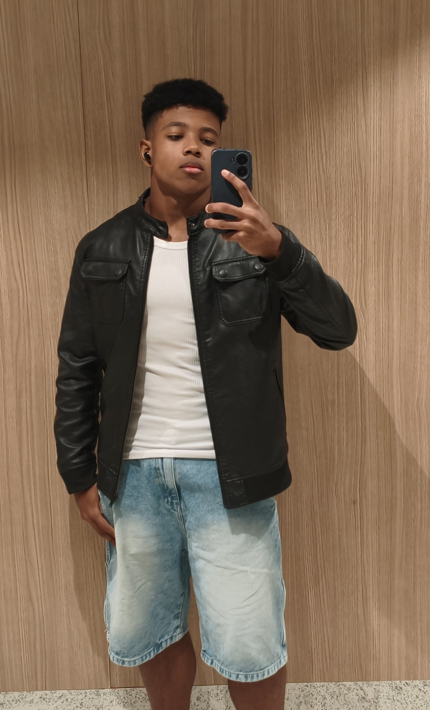
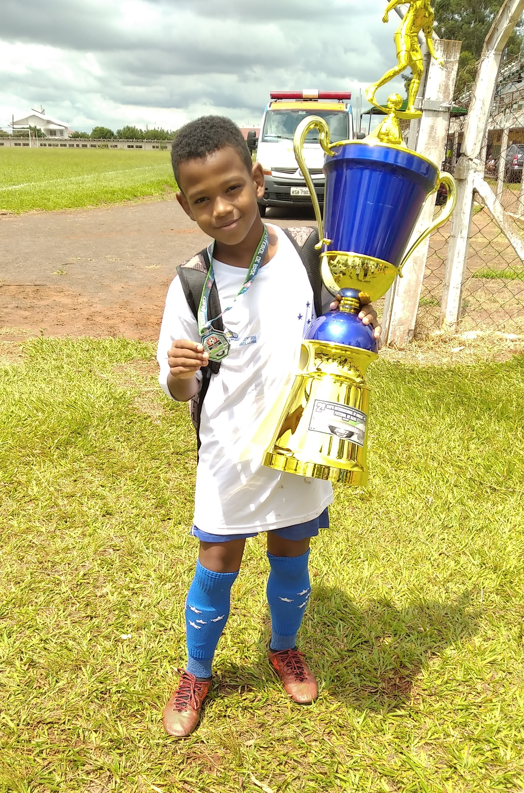

Atualmente estou aprendendo desenvolvimento web com HTML e CSS. Este é um blog pessoal, da minha biografia onde contarei um pouco sobre mim!
Bem, posso dizer que o esporte faz parte de grande parte da minha vida, e isso sempre foi habitual na minha vida, desdê meus 5 anos praticava futubol, e por cerca dos meus 12 anos parei de achar tão legal e nesse momento encontrei o volêi no qual prático até os dias de hoje, e recentemente desenvolvi um apreço bem grande pelo atletismo, acho muito legal a ideia de você poder práticar um esporte quando você quiser como a corrida, diferente do volei onde você precisa de um grupo de pessoas uma bola boa, e uma quadra disponível. Mas no geral eu amo esporte
